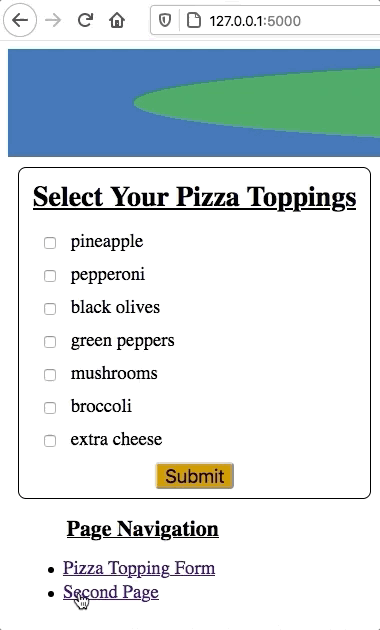

22.7. Page Navigation¶
So far, we’ve used the address bar in the browser to access each webpage we’ve built. However, we need to do better than this. Users shouldn’t have to type in the address for every page they want to visit!
Adding links that connect to other pages in our website makes navigation much easier. These links can take many forms, like a simple list of URLs, a set of clickable icons, Next Page and Previous Page buttons, a dropdown menu, or a nav bar. (You can find several of these options on this page!)
22.7.1. A List of Links¶
Let’s start with a basic, unordered list of links. Each item will lead to one of the pages in our website. For now, we will keep the design simple. We can make it look nice after we get the navigation working.
Since we want the list to appear on every page, we will add it to the base template.
Open
base.htmlin Visual Studio Code.Add a
navelement below theendblockstatement. Include a heading and an unordered list. Make one item for each of the pages you created earlier.15 16 17 18 19 20 21
<nav> <h3>Page Navigation</h3> <ul> <li>Pizza Topping Form</li> <li>Second Page</li> </ul> </nav>
Save your work, then launch
main.py. The list should appear on each page that extendsbase.html.Next, change the list items from text to active links.
Wrap the text in link tags,
<a></a>.<li><a href="">Pizza Topping Form</a></li> <li><a href="">Second Page</a></li>
Fill in the
hrefvalues with the path to each page:<li><a href="/">Pizza Topping Form</a></li> <li><a href="/second">Second Page</a></li>
Note the values assigned to each
href. The strings match the paths from the@app.route()handlers inmain.py. They should NOT be the.htmlnames you gave to the template files. The paths you use will depend on your Python code. They might not match this example.Save your work, then refresh the tab in the browser. Properly done, the navigation links should work something like this:
A list of links provides basic website navigation.¶
Try It!
If we hover the pointer over one of the links, its URL appears in the bottom corner of the browser window.
22.7.2. Bring in Some Logic¶
So far, so good. The list of links works. However, there is a weakness in our
code. If we add, remove, or rearrange the pages in our website, we need to
manually adjust the li elements in base.html. It would be better if the
size and order of the list automatically updates when we make a change.
Fortunately, we make this happen by adding a for loop to the base template.
Since each link requires two pieces of data (an href value and the link
text), we have a few options for feeding this information from Python to the
templates. Three possibilities are a list of lists, a dictionary, or an object
created from a user-defined class. (There are other choices as well).
In this case, we will use a dictionary.
22.7.2.1. Update main.py¶
Near the top of the code in
main.py, define a dictionary callednavigation.Add one key/value pair for each page in your website. The key will be the text for the link. The value will be the path to that page.
3 4 5 6 7 8 9
app = Flask(__name__) app.config['DEBUG'] = True navigation = { 'Pizza Toppings Form': '/', 'Second Page': '/second' }
Include the
navigationdictionary as an argument in eachrender_template()function.return render_template('template_name', navigation = navigation, ...)
22.7.2.2. Update base.html¶
Jinja3 uses the same syntax as Python to loop through a dictionary by key/value paris.
Replace the
liitems in the list with a loop:15 16 17 18 19 20 21 22
<nav> <h3>Page Navigation</h3> <ul> {% for (text, path) in navigation.items() %} <li><a href={{path}}>{{text}}</a></li> {% endfor %} </ul> </nav>
Each time the loops runs,
textis assigned the next key in the dictionary.pathtakes the value of that key.Save your work, then refresh the tab in the browser. Test to make sure both links still work.
Try It!
With the loop in place, changes made to navigation will appear on all
pages that extend base.html. Test this out!
- Try rearranging the order of the key/value pairs in
navigation. - Add a third page to the website. Include a key/value pair for the page in
the
navigationdictionary.
22.7.3. A Dropdown Menu¶
As a website grows, the navigation menu requires more space on the page. To keep their layout neat and consistent, web developers often use features that hide the menu until a user reveals it.
{kind=link}
Menu items appear when the user hovers over a each heading.¶
While it won’t be as fancy as the image, we can add some CSS rules to make our
own dropdown menu. It will appear when the user moves their pointer over the
Page Navigation heading.
First, add the following
classattributes to the<nav>,<h3>, and<ul>tags:15 16 17 18 19 20 21 22
<nav class="dropdown"> <h3 class="droptitle">Page Navigation</h3> <ul class="dropdown-content"> {% for (text, path) in navigation.items() %} <li><a href={{path}}>{{text}}</a></li> {% endfor %} </ul> </nav>
Next, add the following class selectors to
style.css. The explanation for how the code works follows this section.1 2 3 4 5 6 7 8 9 10 11 12 13 14 15 16 17 18 19 20 21
.dropdown { position: relative; } .droptitle { margin-bottom: 0px; } .dropdown-content { display: none; /* Hides content */ position: absolute; margin-top: 0px; background-color: white; width: 100%; border: 1px solid lightgray; padding: 10px 15px; } .dropdown:hover .dropdown-content { display: block; /* Displays content */ }
Save, then use Shift + Refresh or Control + Refresh to apply the CSS changes in the browser. Move the cursor over the heading to test the code.
{kind=link}
22.7.3.1. CSS Breakdown¶
Let’s take a look at how the CSS rules make a working dropdown.
- Line 2:
position: relativemakes the elements inside the<nav></nav>tags pair up with each other. Theh3comes first, with theulright below it. - Line 11: When the dropdown items appear,
position: absolutemakes them overlap other content instead of pushing it further down the page. The revealed menu covers up other text and images. If we set this value torelative, then anything below the menu would shift position when it opens. - Lines 6 & 12: For dropdown menus, we need to be careful with margins. If
the gap between the label and the choices is too large, then the content
will disappear when the user moves their mouse to make a selection! To
prevent this, we set the bottom margin of
droptitleto zero pixels. Similarly, we set the top margin ofdropdown-contentto0px. - Lines 13-16: These properties control the appearance of the menu.
- Setting a
background-colorhides any content that the menu overlaps when it opens. width: 100%makes the menu take up the same horizontal space as its container (nav).borderandpaddingmake the menu area and text more obvious.
- Setting a
- Line 10:
display: nonehides the element from the screen. The menu items are still on the page, but they do not appear in the view. - Lines 19-21:
.dropdown:hover .dropdown-contentcontrols the operation of the menu. In the browser, when the pointer moves over thenavelement,dropdown:hoverbecomesTrue. When this happens,display: blockis applied to thedropdown-contentclass. This overrules thedisplay: nonestatement in line 10, and the menu appears on the page! When the pointer moves away from the menu,dropdown:hoverbecomesFalse, anddisplay: noneis reapplied.
Tip
You can explore other dropdown styling options at W3Schools.
22.7.4. Navigation Bar and Other Options¶
There are LOTS of ways to create smooth website navigation. While we won’t dive any deeper into this topic, here are a few helpful resources you can explore on your own.
Down the Rabbit Hole:
- CSS Navbar at W3Schools.
Navs & tabs,Navbar, andPaginationcomponents at Bootstrap.- Flask-Menu is an extension that adds support for generating menus.